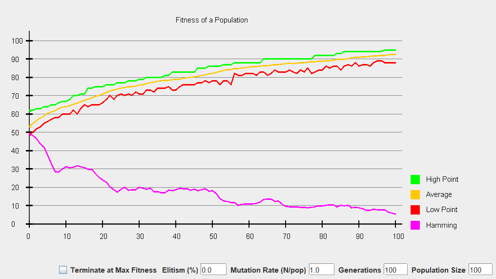
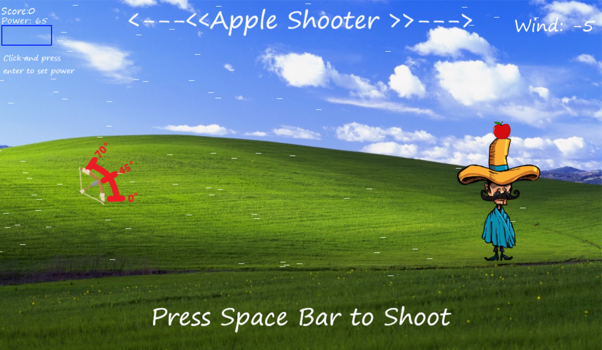
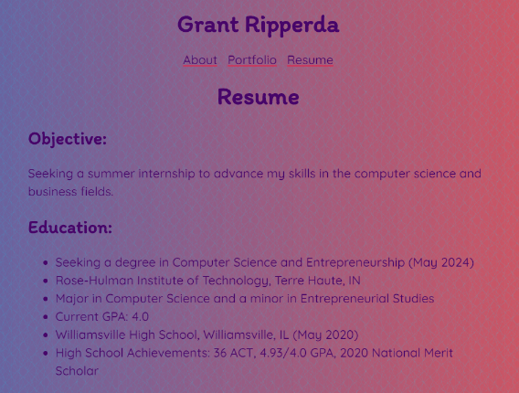

About
Hi! My name is Grant Ripperda, and I am a CS major from Sherman, IL. It's a small town in the middle of the cornfields of Central Illinois, so you probably have never heard of it. I am also on the football team here at Rose-Hulman, which takes up most of my free time. When I am home/ not in school, I enjoy riding fourwheelers and working on my cars. I also run a woodworking business (@g.r.woodworking on Instagram), which I learned how to do through my dad. In high school most of my time was spent playing sports (football, wrestling, track), lifting, and working for my business.
Portfolio
Genetic Algorithm
-
This was my final project for CSSE 220. It is a genetic algorithm that simulated evolution, while being able to change certain paramters, such as the type of selection, time period, and mutation rate. It was a fun project that taught me a lot abut how to structure a larger program.
Archery Game Project
-
I coded this Apple-Shooter video game as a final project for CSSE 120. It was a lot of fun to make, and features variable angles, wind, and power. A lot of work went into making the arrow fly in a realistic fashion, while also allowing the wind, angle and power to have an effect on it.
Personal Portfolio
-
You are currently looking at this project. This is the first course that I am taking in HTML, CSS, and JS, so it has been challening to learn these new languages. This is one of the projects that I will actually keep up-to-date and use in the future. I have definitely enjoyed doing this project, as web design is a new and interesting subject that I am currently learning.
Resume
Objective:
Seeking a summer internship to advance my skills in the computer science and business fields.
Education:
- Seeking a degree in Computer Science and Entrepreneurship (May 2024)
- Rose-Hulman Institute of Technology, Terre Haute, IN
- Major in Computer Science and a minor in Entrepreneurial Studies
- Current GPA: 4.0
- Williamsville High School, Williamsville, IL (May 2020)
- High School Achievements: 36 ACT, 4.93/4.0 GPA, 2020 National Merit Scholar
Related Courses / Skills:
- Intro to Software Development
- Object-Oriented Software Development
- Data Structures & Algorithm Analysis (in progress)
- Intro to Web Programming (in progress)
- Personal Finance
- Technical Entrepreneurship
- Languages: Java, Python, HTML, CSS, Javascript
Experience:
-
GR Woodworking,
self employed
- Custom, handmade woodworking products
-
Illinois Kids Wrestling Federation
- Worked as a youth wrestling official throughout high school
-
Zinn Construction
- Worked throughout the summer of 2020 for a landscaping / construction company
Activites / Honors:
- Varsity Football Team, Rose-Hulman
-
Varsity Football Team,
Williamsville High School
- IHSA Class 3A All-State Football Team (2019)
- IHSA Class 3A State Champs(2019)
- WANDTV Athlete of the Week (2019)
- CW23 Scholar Athlete of the Year (2020)
-
Varsity Wrestling Team,
Williamsville High School
- 3x State Qualifier
-
Varsity Track Team,
Williamsville High School
- 2x State Qualifier